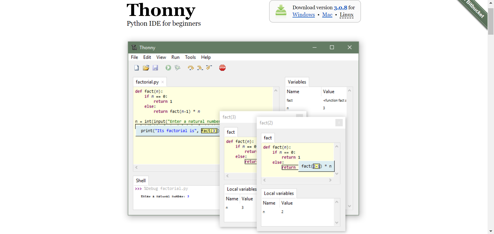
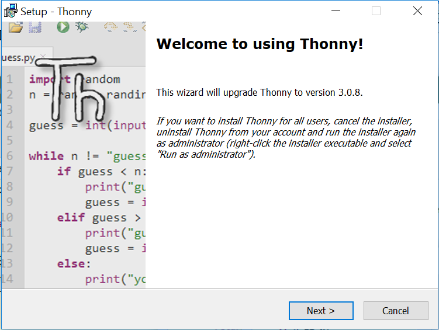
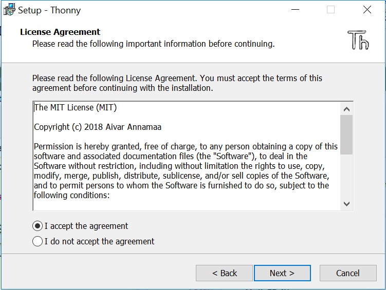
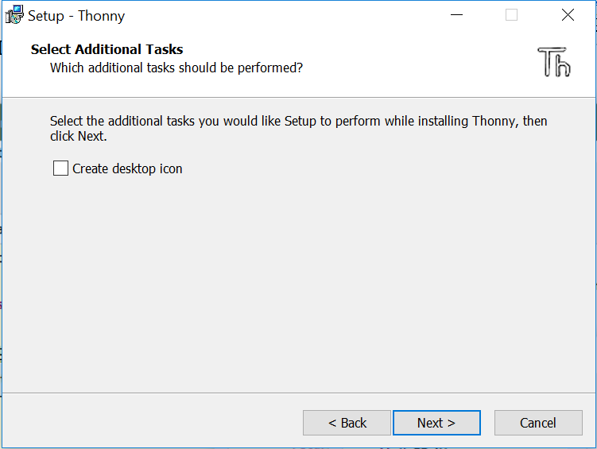
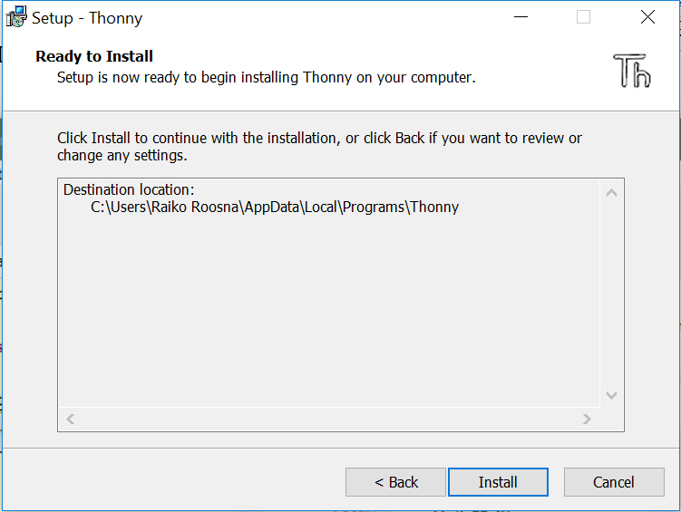
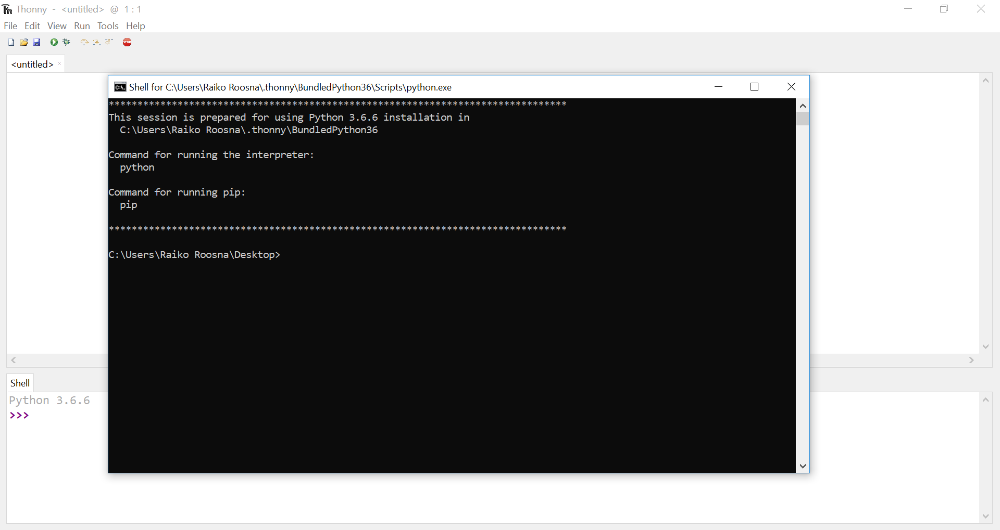

Python on üldotstarbeline interpreteeritav programmeerimiskeel, mida algselt arendati skriptimiskeeleks.
Python võimaldab mitut programmeerimisstiili, näiteks objektorienteeritud, protseduraalset või funktsionaalset
programmeerimist.
Pythonit peetakse küllaltki lihtsaks keeleks ja seda on soovitatud programmeerimise õppimisel esimeseks keeleks.
Python sisaldab selliste programmeerimiskeelte nagu C++, Java, Modula-3 ja Scheme tunnuseid.Pythoni töötas
1990ndate
alguses Hollandis Stichting Mathematisch Centrumis välja Guido van Rossum. Python on keele ABC järglane.
ABC omakorda on inspireeritud SETL-ist. 2000. aasta mais lõid Guido van Rossum ja Pythoni arendusmeeskond firma
BeOpen PythonLabs, mis sama aasta oktoobris ühines firmaga Digital Creations (hiljem tuntud kui Zope Corporation).
2001. aastal loodi mittetulundusühing Python Software Foundation, mis on Pythoni autoriõiguse omanik, ühingu
sponsoriks on ka Zope Corporation.
Python on oma nime saanud briti komöödiagrupi Monty Python järgi. Dokumentatsiooni koodinäidetes üritatakse vältida
liigset
tõsidust viidetega grupi loomingule.
Kõik Pythoni avalikustatud versioonid on avatud lähtekoodiga. Enamik väljalasked, kuigi mitte kõik, ühilduvad ka
GPL-litsentsiga.
Pythoni interpretaatorit ja teeke levitatakse tasuta tarkvarana.Python on dünaamiliste andmetüüpidega keel, kus
programmeerijal
ei ole tarvis määrata muutujate tüüpe. See suurendab programmeerija võimalusi, kuid on samas veaohtlik.
Pythoni koodi interpreteerimine ja optimeerimine võivad olla mõnikord aeglased protsessid. Selle omaduse poolest
sarnaneb Python Javaga,
kuna ka Pythoni programmid kompileeritakse enamasti baitkoodiks, kuigi Pythoni puhul on see protsess läbipaistev.
Siiski on Pythoni programmid
masinkoodi kompileeritud programmidest (C, C++) alati aeglasemad, isegi mitu korda. Samas pole tänapäeva arvutite
kiiruse juures seda vahet lihtsamate ülesannete puhul märgata.
Kuidas paigaldada Pythonit
Thonny on algajatele mõeldud Pythoni programmeerimiskeskkond, mille paigaldusfailid ja juhised leiad aadressilt https://thonny.org.Osad installeerimist illustreerivad kujutised pärinevad veebilehelt www.thonny.org

Pildil on näha üleval paremal nurgas valik: Windows, Mac või Linux. Valides vastava võimaluse hakkab Thonny-t alla
laadima.
Kui fail on alla laetud tuleb see avada ja alustada installimisega.

Klõpsake "Next"
Nüüd tuleks valida "I accept the agreement" ja tuleks valida "Next"
Peale seda tuleb valik, kas soovid teha desktopile ikooni või mitte.

Nüüd tuleks vajutada "Install" ja peale seda on Thonny paigaldatud.
Avades Thonny võiks vastu vaadata selline pilt.
Pip kasutamiseks tuleb avada Thonny, ülevalt ribalt tuleks valida "Tools" ja siis "Open
system shell"
Siis peaks avanema selline aken, kust saab pip-iga lisasid installida.
